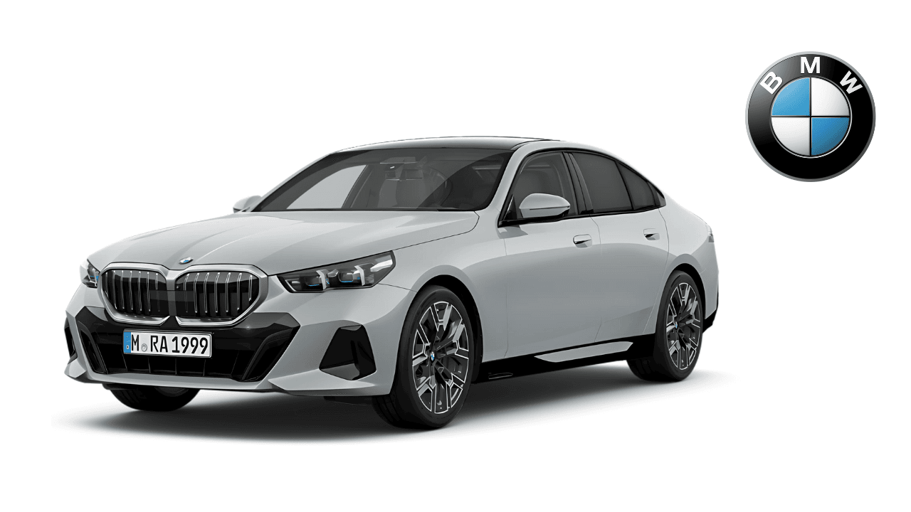
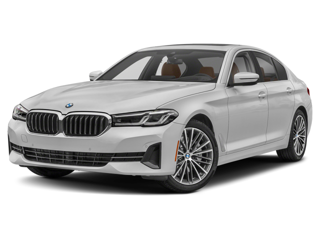

BMW
BMW 5 Series
جميع نسخ BMW 5 Series مع المواصفات الرسمية مرتبة في صفحة واحدة لتسهيل المقارنة بين جميع الإصدارات.
جميع نسخ BMW 5 Series مع المواصفات الرسمية مرتبة في صفحة واحدة لتسهيل المقارنة بين جميع الإصدارات.

| المحرك | 2.0 لتر تيربو |
| عدد الأسطوانات | 4 |
| القوة | 190 حصان |
| عزم الدوران | 310 نيوتن متر |
| ناقل الحركة | 8 سرعات Steptronic |
| نظام الدفع | خلفي |
| التسارع (0-100) | 7.5 ثانية |
| السرعة القصوى | 230 كم/س |
| عدد المقاعد | 5 |
| نوع الوقود | بنزين |

| المحرك | 2.0 لتر تيربو |
| عدد الأسطوانات | 4 |
| القوة | 258 حصان |
| عزم الدوران | 400 نيوتن متر |
| ناقل الحركة | 8 سرعات Steptronic |
| نظام الدفع | خلفي |
| التسارع (0-100) | 6.1 ثانية |
| السرعة القصوى | 250 كم/س |
| عدد المقاعد | 5 |
| نوع الوقود | بنزين |

| المحرك | 3.0 لتر 6 أسطوانات مستقيمة تيربو + نظام هجين خفيف |
| عدد الأسطوانات | 6 |
| القوة | 375 حصان |
| عزم الدوران | 540 نيوتن متر |
| ناقل الحركة | 8 سرعات Steptronic Sport |
| نظام الدفع | xDrive رباعي |
| التسارع (0-100) | 4.7 ثانية |
| السرعة القصوى | 250 كم/س |
| عدد المقاعد | 5 |
| نوع الوقود | بنزين |

| المحرك | 4.4 لتر V8 توين تيربو |
| عدد الأسطوانات | 8 |
| القوة | 530 حصان |
| عزم الدوران | 750 نيوتن متر |
| ناقل الحركة | 8 سرعات Steptronic Sport |
| نظام الدفع | xDrive رباعي |
| التسارع (0-100) | 3.8 ثانية |
| السرعة القصوى | 250 كم/س |
| عدد المقاعد | 5 |
| نوع الوقود | بنزين |